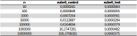

(Euler 6) Ardışık Sayıların Toplamı
İlk 10 doğal sayının karelerinin toplamı
$$1^2+2^2+...+10^2=385$$
ilk 10 doğal sayının toplamının karesi ise,
$$(1+2+3...+10)^2=55^2=3025$$
olduğundan, ilk 10 sayının karelerinin toplamı ile toplamlarının karelerinin farkı \(3025-385=2640\)dır. İlk 100 doğal sayının karelerinin toplamı ile toplamlarının karesi arasındaki farkı bulunuz.
Problem tanımı oldukça açık. Basit bir çözümle başlayıp, bunu nasıl geliştirebiliriz diye bakacağız.
def euler6(n): return sum(range(1,n+1))**2 - sum(x**2 for x in range(1,n+1))
Bu çözüm benim bilgisayarımda \(n = 10000000\) sayısına kadar problemsiz bir şekilde çözüm üretebiliyor. Pek kötü sayılmaz, ama matematik kaslarımızı geliştirerek çok daha verimli bir şekilde problemi çözebiliriz. Öncelikle, problemin şu kısmına bir göz atalım.
$$(1+2+3...+10)^2=55^2=3025$$
Parantez içindeki kısım ardışık sayıların toplamı. Ardışık sayıların toplamı formulü, bilinen bir formül, ama ikinci kısımda kullanacağımız yönteme altyapı oluşturması açısından, ardışık sayıların toplamı formülünü baştan icat edeceğiz. 1'den n'e kadar olan sayıların toplamı \(f(n) = 1 + 2 + ... + n\) olsun. \(n\) sayısına göre \(f(n)\) fonksiyonundaki 1. ve 2. derece değişikliği \(\triangle\) sembolü ile göstereceğiz. \(n\) ve \(f(n)\) arasındaki ilişkiyi anlamak için aşağıdaki tabloya göz atalım.
Yukarıdaki tabloya göre, \(\triangle_2\)'nin değişkenlik göstermediğini görebiliriz. Bu durumda, \(f(n)\) fonksiyonunu ikinci derece bir polinom biçiminde ifade edebiliriz. (ikinci derece türevi sabit olduğundan) \(f(n) = an^2 + bn + c\) diyelim. Bu durumda, \(n=1\), \(n=2\) ve \(n=3\) değerlerinden, üç bilinmeyenli 3 denklem elde ederek, \(a\), \(b\) ve \(c\) değerlerini hesaplayabiliriz.
$$\begin{eqnarray} f(1) = 1 &= a + b + c \\ f(2) = 3 &= 4a + 2b + c \\ f(3) = 6 &= 9a + 3b + c \\ \end{eqnarray} $$
Yukarıdaki 3 bilinmeyenli 3 denklemi çözdüğünüzde, \(a = 1/2, b=1/2, c=0\) sonucuna ulaşmanız gerekiyor. Aksi takdirde, işlemlerinizi
kontrol edip, bu sonuca ulaşın. Bu durumda, \(f(n) = \frac{n^2}{2} + \frac{n}{2} = \frac{n(n+1)}{2}\) sonucuna ulaşırız. Böylece, matematik kitaplarındaki
ardışık sayılar toplamı formulünü kanıtlamış olduk. Bu durumda, euler6 fonksiyonumuzu şu şekilde yazabiliriz.
def euler6(n): return (n*(n+1)/2)**2 - sum(x**2 for x in range(1,n+1))
Problemin diğer kısmına göz atarsak, ilk kısımla oldukça benzer bir yapıda olduğunu görürüz.
$$1^2+2^2+...+10^2=385$$
Aynı yöntemle devam edecek olursak, \(g(n) = 0^2 + 1^2 + 2^2 + ... + n^2\) olsun. Bu defa, \(1^2\) yerine, \(0^2\) ile başladık. Bu fark, sonucu değiştirmemekle birlikte, sonuca ulaşmak için gerekli işlemleri kolaylaştıracak. Bir önceki tablonun benzerini, bu fonksiyon için de inceleyelim.
Bu fonksiyonun ilkinden bir farkı olmamakla birlikte, 3. dereceden bir fonksiyon. Yani, fonksiyon \(g(n) = an^3 + bn^2 + cn +d\) biçiminde olacak. \(g(0) = 0\) olduğundan, \(d = 0\) olacak. Bu nedenle, yine 3 bilinmeyenli 3 denklem çözeceğiz.
$$\begin{eqnarray} f(1) = 1 &= a + b + c \\ f(2) = 5 &= 8a + 4b + 2c \\ f(3) = 14 &= 27a + 9b + 3c \\ \end{eqnarray} $$
Yukarıdaki denklemleri çözdüğünüzde, \(a = 1/3, b=1/2, c=1/6\) sonucuna ulaşacağız. Demek ki, \(g(n) = \frac{n^3}{3} + \frac{n^2}{2} + \frac{n}{6} = \frac{n(n+1)(2n+1)}{6}\)
Problemin iki parçasının çözümünü yanyana koyup, daha da sadeleştirebiliriz.
$$\begin{eqnarray} e(n) &= \left(\frac{n(n+1)}{2}\right)^2 - \frac{2n^3+3n^2+n}{6}\\ &= \frac{n^4+2n^3+n^2}{4}-\frac{2n^3+3n^2+n}{6}\\ &= \frac{3n^4+2n^3-3n^2-2n}{12}\\ \end{eqnarray} $$
Bu fonksiyonun Python karşılığı da şu şekilde olacak.
def euler6(n): return (3*n**4 + 2*n**3 - 3*n**2 - 2*n)/12
Bir hayli emek harcadık, bakalım sonuçlara nasıl yansımış? Kodları test etmek için, aşağıdaki kodları kullandım.
def euler6_control(n): return sum(range(1,n+1))**2 - sum(x**2 for x in range(1,n+1)) def euler6_test(n): return (3*n**4 + 2*n**3 - 3*n**2 - 2*n)/12
timeit.timeit sonuçlarımız aşağıdaki gibi. (number=10)

Görüldüğü üzere, fonksiyonumuzun ilk halinin çalışma süresi, \(n\) sayısının büyüklüğüne bağlı olarak ciddi oranda artış gösterirken,
son fonksiyonumuzun çalışma süresi, girdi sayısının büyüklüğüne çok duyarlı değil. Örneğin, \(n=100000\) için, euler6_control fonksiyonunun
ikiyüzbin civarı işlem yapması gerekirken, euler6_test fonksiyonunun sadece 11 işlem yapması gerekiyor. Son versiyonumuzun avantajı da burada.
Ardışık sayıların toplam formüllerini olduğu gibi kullanmak yerine, matematiksel arkaplanları hakkında birşeyler yazmak istedim. Yazıyı daha ilginç kılmıştır diye ümit ediyorum.
Kaynakça
- Ken Ward's Mathematics Pages
- Using Matrices to Solve a System of Equations or Simultaneous Equations
- Inverse Matrix Method Calculator
Gelecek Problem
İlk 6 asal sayıyı listelersek: 2, 3, 5, 7, 11, ve 13, 6. asal sayının 13 olduğunu görürüz.
10001'inci asal sayı kaçtır.